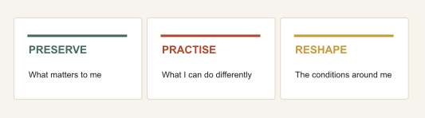
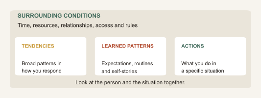
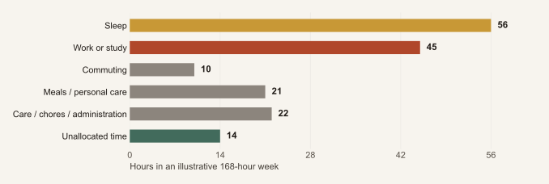
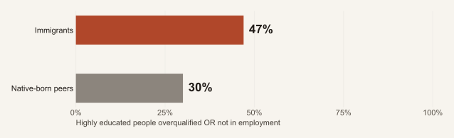
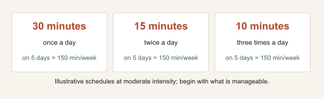
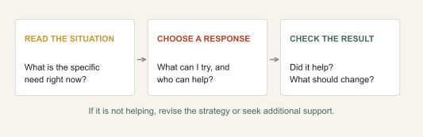
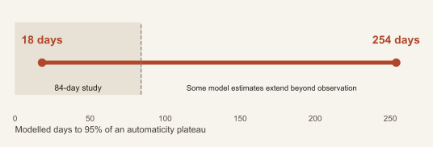
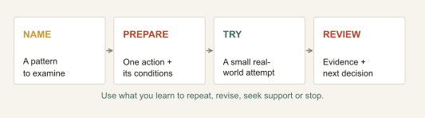
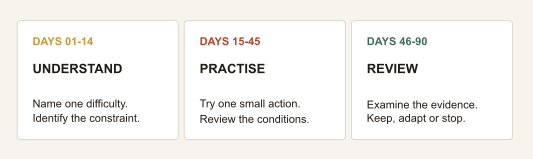

Change Without
Losing Yourself
A practical guide for Africans moving abroad for study, work, family or safety. Rebuild everyday support, navigate cultural change and find workable ways to handle loneliness, anxiety and unfamiliar routines.
READ THIS FIRST
The report in two minutes
Moving abroad changes more than your address. It can remove the people, routines, language and roles that helped you feel capable. Missing them does not mean the move was a mistake.
Rebuild everyday support. Alongside documents and money, plan for meals, rest, health care, a reliable contact and somewhere you can participate regularly. Include the needs of a partner or children whose experience may differ from yours.
Seek connection you can return to. One recurring activity and a specific invitation can be more useful than a calendar full of introductions. Keep relationships at home while making room for relationships where you now live. Trust and reciprocity matter more than popularity.
Make the difficulty specific. “I cannot cope here” may contain a noisy room, an unclear assignment and an empty weekend. Each needs a different response. Name one problem, choose an available strategy, try it and check the result. Change the strategy when it is not helping.
Give your body a workable routine. Choose enjoyable, accessible movement and protect opportunities to sleep and eat. Start with an amount you can manage. Exercise may support wellbeing; it cannot resolve an unsafe job, a visa restriction or a mental health condition by itself.
Keep your values while learning local methods. Ask how a particular classroom, workplace or relationship operates. Culture varies within countries. Rehearsing a new skill does not require accepting racism or abandoning your identity.
Let emotions and progress coexist. You can miss home, grieve or feel uncertain while taking useful steps. There is no compulsory adjustment sequence or deadline. Persistent, worsening or disabling distress deserves qualified support.
Start here this week
Choose one difficulty, one small action and one source of support. Review what happened after a week; seek help sooner for urgent needs. The longer plan creates review points, not a deadline for feeling settled.
Explore the figures · Download figure data (CSV)
You can build a different life without treating your old self as a mistake.
Getting the visa, admission or job offer may solve one problem while opening several others. You still have to build an ordinary life: somewhere to rest, people to call, routines you can afford and a sense of who you are when familiar roles change.
This report is for Africans moving to another country for study, work, family, exploration or safety. It also speaks to people already abroad, moving again or considering a return.
The practical task is to rebuild the conditions that help you function, connect and make choices. You do not have to become a different person before you deserve a workable life.
Three questions to carry into change


How to use this report
Read the two-minute summary, then choose the section that fits your present difficulty. Try one manageable action and review whether it helps. The first-week checklist, conversation examples and worksheet are starting points, not another set of demands.
Prepared for Africa Global Forum using the supplied Change materials, interviews with George Bonanno and Wendy Suzuki, John Cacioppo's discussions of connection, and selected research and official guidance. [1] [11] [17] [18] [19] [20]
Section 01There is more than one African journey
“Abroad” also means another African country. IOM's World Migration Report 2024 reports around 21 million people living in another African country in 2020. This is a historical migrant stock, not an annual flow or a current count. [9]
A move from Senegal to Côte d'Ivoire, Zimbabwe to South Africa or Uganda to Kenya can involve changes in language, status, rules and belonging. A move to Europe, North America, the Gulf or Asia creates other combinations of opportunity and constraint. Distance alone does not measure the size of a transition.
| Situation | What a useful change plan must consider |
|---|---|
| Preparing to move | Expectations, verified requirements, costs, support and alternatives if the original plan fails. |
| Studying or working away | Local systems, recognition of skills, relationships, workload and conditions of residence. |
| Joining a partner or family | Each person's independence, career, friendships, care work and access to resources. |
| Returning or moving again | Current conditions at the destination and the expectations of people who remember an earlier version of you. |
| Moving for safety or after a crisis | Protection, essential documents, housing, health care and reliable advice before optional self-improvement goals. |
Different starting points, different choices
Someone relocating voluntarily with savings has different options from a displaced person, a worker dependent on an employer or a student supporting relatives. Citizenship, race, gender, disability, age, language and class can all shape the available choices.
Africa is not a single culture, and migration is not one experience. This report offers questions to adapt, rather than a standard African personality or a universal adjustment timetable. A successful transition can mean advancement, greater stability, a safer life or simply getting through a difficult period with support.
Section 02Prepare for an ordinary Tuesday, not only arrival day
A destination can look attractive on paper while daily life remains difficult. Before moving, ask a person with a similar schedule, income and family situation to describe an ordinary weekday. The answer may reveal more than a general verdict that life abroad is good or bad.
Five practical questions
- After work or class, who will I see? Ask about recurring activities, travel time, cost and whether newcomers can join alone.
- What happens if I become ill? Find the route to primary care, medication continuity and urgent help. Verify coverage, charges and eligibility rather than relying on a friend's experience.
- What will take longer at first? Allow time for shopping, transport, unfamiliar forms, language and appointments. These tasks can consume energy before a study or work day begins.
- How will I stay connected to home? Agree a realistic call rhythm, time-zone boundaries and an alternative for urgent contact. Talk about financial expectations before every request becomes a crisis.
- What is my fallback? Identify a trusted contact, copies of essential documents and the next source of advice if accommodation, funding or work falls through.
These are preparation questions, not claims that everyone can secure these resources. Where you cannot arrange something, mark it as a support need to raise with the university, employer, host or community organisation. [6] [7]
Make room for the goodbye
The supplied accounts include distress before departure, even when a scholarship or opportunity is welcome. They are individual stories, but they remind us that separation starts before the flight. [19] A farewell meal, shared photographs or a plan for the first call can acknowledge the relationship without promising that nothing will change.
A useful sentence is: “I am looking forward to this, and I am sad to leave you. Can we decide how we will stay in touch?” Men deserve room to say this too. If distress prevents eating, sleeping or functioning, seek support rather than treating it as a test of toughness.
Section 03Notice what your old environment did for you
At home, connection may have happened while cooking, travelling, worshipping, studying or visiting a relative. A move can remove those opportunities. What looks like a sudden loss of discipline or confidence may partly be the loss of a supportive setting.
The supplied accounts describe empty homes after life in larger households, humour that becomes harder in another language, and loss of independence when work is restricted. [19] These experiences suggest a useful exercise: identify the function that is missing before choosing the replacement.
| What you miss | What it provided | A possible replacement to test |
|---|---|---|
| Familiar people nearby | Company without organising an event | A regular shared lunch, study session or call while doing a routine task. |
| A role people recognised | Competence and contribution | A permitted project, course or community role that uses a skill you already have. |
| Easy practical advice | Less uncertainty about daily tasks | One reliable local service or contact; save official instructions as you learn. |
| Familiar food and language | Comfort and cultural continuity | A manageable cooking routine, a language community or a regular exchange with someone at home. |
These are original AGF suggestions. Adapt them to safety, accessibility, cost and the conditions of your stay. A crowded household was not supportive for everyone; some people move to gain privacy, safety or freedom.
Review the whole household
A person with a job or course may acquire regular contact automatically while an accompanying partner has neither. Ask each adult separately: “What gives your week structure? Who can you turn to? What choices feel available?” Allocate time and resources for both people's independence.
Budget for participation as well as rent. A small transport, phone-data or childcare allowance may make a recurring connection possible. Where money is unavailable, look for accessible free options and ask institutions what support they provide. Belonging also depends on whether people can reach and afford the places where relationships form.
Section 04What exactly are you trying to change?
The Solved guide distinguishes broad personality tendencies, learned adaptations and observable behaviour. It presents this as an organising simplification. [1] That distinction can prevent a specific difficulty from becoming a verdict on your whole identity.
“I did not speak in that meeting” describes an event. “I am incapable of leadership” turns it into a life sentence. A more useful experiment is to prepare one question and ask it in the next suitable meeting.
Figure 1. Choose the right target


The surrounding conditions deserve equal attention. COM-B, a behaviour-change framework, asks about capability, opportunity and motivation. Wanting to attend a course is insufficient if the schedule conflicts with work or the materials are inaccessible. [2]
Tendencies are not destiny
A review of 207 studies, primarily involving clinical interventions, found changes in personality trait measures. It does not promise that a self-help exercise will transform anyone's personality. It does challenge the idea that adults are permanently fixed. [3]
You can stretch for a purpose without demanding a new personality. A quieter person might prepare for important conversations and allow recovery afterwards. The aim is useful action, not performing someone else's ideal character.
Section 05A personality score is a starting point for questions
The podcast's discussion of labels raises a useful question: does a description help you understand a pattern, or close off possibilities before you have tried them? [11] “I prefer smaller groups” can guide a networking plan. “People like me cannot lead” makes a much larger claim.
If you want to take a personality test
A researched dimensional measure such as the Big Five Inventory-2 can support reflection. Its domains describe openness, conscientiousness, extraversion, agreeableness and negative emotionality, with more specific facets underneath. These are dimensions, not five types of people or a ranking of human worth. [12]
Check who developed the questionnaire, whether its language version and intended population have been studied, and how its scoring is explained. Consider the result alongside examples from your life and feedback from someone who knows you. It is not a diagnosis or a sufficient basis for choosing a career, partner or country.
Culture matters to measurement
Research using surveys across 23 low- and middle-income countries found substantial challenges in recovering the expected Big Five structure. Language, response patterns and administration deserve attention; validation in one setting cannot simply be assumed everywhere. This is a measurement warning, not a claim that Africans lack the traits. [13]
You can begin without a test
For a week, note the situation, your response, how it felt and what helped. Compare contexts: close friends and strangers; a familiar language and a newer one; a rested day and an overloaded day. These are observations, not a validated assessment.
| Observation | A question worth investigating |
|---|---|
| Quiet in a new workplace, expressive with friends | Is the difficulty preference, language effort, unclear expectations or the cost of speaking up? |
| Organised at work, overwhelmed by personal paperwork | What structure, time or support exists in one setting and is missing in the other? |
| More at ease in a small group | Could recurring small-group contact serve the goal better than large events? |
Describe patterns precisely and leave room for new evidence. Traits can be relatively stable and still change; a score does not establish your permanent limits. [3]
Section 06A full week cannot absorb unlimited change
Plans often count the hours of a course and overlook the work of making a life function: travel, meals, care, paperwork, appointments and calls across time zones. These activities consume capacity even when they do not appear on a CV.
Figure 2. What room is left in the week?


In this invented example, 154 hours are already allocated. The remaining 14 hours include rest, relationships, unexpected tasks and learning. Adding a ten-hour course would leave four hours for all of those purposes, unless another commitment changes.
Budget for friction, not only the ideal week
Before adding a commitment, identify what you will reduce, share, postpone or stop. Treat rest as a real need; a free hour on a calendar is not necessarily an hour of concentration. Where possible, retain some unallocated time for disruptions.
A useful resource is room to choose: enough practical support, time or financial margin to try something without one setback undoing everything. Not everyone can create this alone. An affordable bus route, predictable shifts or an accessible public service can expand that room.
This week's exercise: record where your time actually goes for seven days. Choose one source of avoidable friction before choosing another goal. If essentials already consume the week, the next step may be asking for help or renegotiating a workload.
Section 07Your skills and your recognition may move at different speeds
A qualification can cross a border while its professional recognition does not. Difficulty securing suitable work should prompt investigation of the process, not an automatic conclusion that your skills have disappeared.
Figure 3. Education does not guarantee suitable work


These EU figures concern highly educated migrants of all origins. They neither measure Africans separately nor explain any individual's experience. They show why the conversion of education into suitable work deserves attention. [5]
Build a route from experience to evidence
Identify the actual obstacle: formal recognition, language, a missing skill, limited contacts, a hiring requirement or discriminatory treatment. Ask a relevant professional body or careers service what is mandatory and what is merely preferred before buying another qualification.
Where feasible, maintain two tracks: current income and longer-term progression. A temporary job can support a transition; review whether its hours and costs still leave a workable route forward. Keep examples of your work, request specific feedback and learn how your field communicates evidence of competence locally.
For students, supplement grades with work you can explain: a project, research contribution, placement or community activity. Check the rules for any work or placement before committing. Professional confidence can grow from evidence of capability, even while recognition remains incomplete.
Section 08Keep the commitment; renegotiate the arrangement
A new salary can create an old expectation at a larger scale: if you earn abroad, you must be able to solve more problems at home. But salary converted into another currency does not reveal rent, deductions, debt, care costs or uncertainty.
For some families, mutual support is a source of security and meaning. The question is how to make it sustainable and fair. Treat relatives as people with priorities and knowledge, rather than passive recipients of a plan made elsewhere.
| Value worth preserving | Arrangement worth discussing |
|---|---|
| Care for family | What support is feasible, when it arrives and what happens during a difficult month. |
| Shared responsibility | Who contributes money, time, local coordination or care, including work that is currently invisible. |
| Respect | How requests are made and how a delayed answer or a refusal is handled. |
| Future security | Which present commitments leave room for health, education, retirement and other long-term needs. |
A conversation that makes change concrete
“I want to remain dependable. Here is what I can commit to for the next three months. For requests beyond that, let us discuss the options before anyone makes a promise. We can review this together on this date.”
The amount is personal; this report proposes no universal remittance percentage. A predictable arrangement may help planning, but it cannot make genuine need disappear. Emergencies require judgement and, where available, wider sources of support.
Discuss money and care within the household abroad as well. A partner who loses career continuity or does more unpaid work has also absorbed a cost of migration. Neither the highest earner nor the person abroad should automatically control every decision.
Progress can mean becoming more reliable with fewer promises. It can also mean accepting support yourself. Your value to loved ones is larger than your ability to transfer money.
Section 09You can welcome the opportunity and miss the life you left
You can be grateful for an opportunity and still miss the life you left. You may miss being known without explanation: humour that lands, familiar food, a trusted neighbour or a visit that did not need booking weeks ahead.
John Cacioppo's interviews distinguish being around people from feeling connected to them. A busy workplace or full classroom can leave you lonely if you have nobody to confide in or rely on. Solitude that you choose and enjoy is different again. [20]
WHO describes connection in terms of the relationships you have, the support they provide and their quality. [25] Ask what kind of connection is missing rather than simply trying to collect more contacts.
Build several kinds of support
- A person who knows your history: someone with whom you can speak honestly without performing constant success.
- A person or service that knows the local system: a source of practical guidance rather than rumours.
- A recurring place to participate: a group, shared activity or accessible online community you can return to.
- Qualified help when needed: a route to health, legal, employment or other specialist support.
These roles can overlap. No single friend, partner or relative has to provide everything. Shared nationality can offer familiarity, but trust still depends on how people behave. Relationships across backgrounds can be valuable too.
Keep home and make room for here
Agree contact that fits both sides' lives. Alongside updates about achievements, share ordinary details and ask about the other person's day. If a long call leaves no time for sleep or local contact, change its timing or length rather than treating closeness as an all-or-nothing choice.
Online relationships can be meaningful, particularly where disability, distance or safety restricts meeting. Notice whether a particular use of technology leaves you more connected, more depleted or simply distracted. [20] A feed full of other people's milestones is different from a conversation in which someone listens.
Section 10Make the next meeting easier
Cacioppo emphasises mutual activity, compatible interests and room for trust to develop. [20] For a newcomer, the practical question is often how to turn a first encounter into another encounter without placing the whole burden of loneliness on one person.
Try a small repeatable invitation
Choose a setting you can realistically revisit: a reading group, football session, walking group, craft class, faith community if wanted, or a regular study table. Check that it is affordable, accessible and welcoming. Volunteering is another possibility where the activity and your immigration conditions permit it.
Introduce yourself through the activity. Then make a specific invitation: “I usually get lunch here after Thursday's class. Would you like to join me next week?” This gives the other person a clear choice. If they decline or do not respond, allow space; a connection needs interest on both sides.
Try returning to a suitable group a few times before judging it. This is an experiment, not a quota. Repeated disrespect, coercion or exclusion is a reason to change settings, not to prove greater resilience.
Separate uncertainty from evidence
A delayed message might reflect work, a different communication habit or lack of interest. Check once where appropriate rather than deciding immediately what it means about your worth. At the same time, do not explain away slurs, harassment or a repeated pattern of discrimination as your negative thinking.
Language can affect timing and humour without diminishing your intelligence. Smaller groups, a shared task, written messages or time to prepare may make participation easier. You do not need to become the loudest person in the room.
Repair what is repairable
With a trustworthy person, try: “When that happened, I felt left out. Was that your intention? Could we do this differently next time?” Repair requires listening and a change in behaviour from both sides. It does not mean tolerating exploitation.
At the end of a week, ask: Where could I be myself? Who showed interest back? Which contact would I like to repeat? These questions are more informative than counting events attended.
Section 11The same behaviour can be read differently
A move can change how other people interpret you before it changes how you understand yourself. Silence may express respect, concentration, uncertainty about language or concern about consequences. Direct speech may be intended as clarity and received as disrespect, or welcomed as participation.
These are possible interpretations, not national characteristics. Families, workplaces, generations and professions differ within every country. The following examples are AGF discussion prompts, informed by the report's attention to context and opportunity. [2] [6]
| Situation | What to clarify | An action to try |
|---|---|---|
| A seminar or team meeting | How are questions invited? Are written contributions accepted? | Prepare a question and ask the facilitator about participation expectations. |
| Disagreement with a supervisor or elder | What language conveys both respect and a clear concern in this relationship? | Explain the shared aim, then name the issue and a possible next step. |
| A request from relatives | Is it urgent, expected, negotiable or already promised to someone else? | Clarify the need before committing; agree what you can reliably do. |
| Children or partners adapting at different speeds | What does each person want to preserve, and what feels difficult? | Discuss one recurring situation without making one person's experience the family standard. |
Learn a wider range of responses
You may be quiet and effective in one setting, more direct in another, and comfortable using different languages or customs with different people. Flexibility does not automatically mean dishonesty. Ask whether the adjustment serves a purpose you accept and whether its cost is sustainable.
A student who begins speaking in class may still prefer a small social circle. A worker who learns to state an achievement clearly can still value modesty. The aim is to expand useful choices, not to declare one cultural style superior.
Distinguish learning from unfair demands
Request concrete feedback: “Which part was unclear, and what would a useful contribution look like?” Vague demands to “fit in” are harder to assess. If the issue is discrimination, exclusion or unsafe power dynamics, individual rehearsal is only one possible response; fair procedures and appropriate support also matter. [7]
Section 12Adaptation does not require self-erasure
A move can interrupt a role that once explained who you were: the successful student, established professional, reliable provider or person who knew everyone. That disruption can feel personal even when its cause is an unfamiliar system or a restriction on what you may do.
Maya Shankar's discussion of change, also noted in the supplied examples, suggests examining capabilities, values and identity. [19] [28] An AGF adaptation is to ask: what mattered to me about the role, and how else could I express part of it while I work on the next step?
A teacher awaiting recognition may value helping people understand. An appropriate, permitted learning project could preserve part of that purpose while the formal process continues. It does not replace professional recognition, fair pay or a route back to qualified work.
Decide what to keep, change and question
Keep practices that sustain you: language, faith, creativity, hospitality, independence or family connection, according to your own values. No list defines every African.
Change a method that no longer serves the value. A planned family call can preserve closeness when answering messages throughout the night damages sleep.
Question standards that make your life smaller. A friend's house, promotion or citizenship milestone does not reveal their resources and trade-offs. Ask whether the target matters to you before turning it into a deadline.
Let others understand the change
Try: “I am less available during the week, but I still want us to talk on Sundays.” Explain the new arrangement and listen to its effect on others. Disagreement is not automatically sabotage; coercion and abuse require a different response.
You can learn a wider range of behaviours without declaring your name, accent or background a problem. Some compromises may be necessary because power is unequal. That does not make unfair demands acceptable.
Your previous role remains part of your history. It does not have to be the only way you can recognise yourself.
Section 13Choose movement you can actually return to
Wendy Suzuki's most usable suggestion is to begin with movement you enjoy and can fit into daily life. [18] For someone settling abroad, this might be dancing at home, a short walk with a colleague, wheeling along an accessible route or an adapted exercise session. A gym subscription is optional.
Physical activity can support health and wellbeing. WHO's general adult guidance is 150-300 minutes of moderate aerobic activity weekly, or 75-150 minutes vigorous activity, or an equivalent combination, plus muscle strengthening on at least two days. Some activity is better than none. [22]
Figure 4. Activity can be spread across the week


Start where your body and circumstances allow
If five or ten minutes feels manageable, use that as a beginning, not a guaranteed dose for anxiety or depression. Choose a safe route or indoor alternative. Adapt for disability, illness, pregnancy, pain or physically demanding work; seek individual advice where needed. Avoid increasing activity through symptoms or sacrificing sleep to follow someone else's morning routine.
Protect the rest of the day too
Plan simple meals and a sleep opportunity that fits your work or study schedule. Agree quiet hours where possible. If a late call home repeatedly interrupts rest, move the call. If shift patterns or housing prevent recovery, address those conditions with appropriate support.
Notice energy, enjoyment and whether the routine is sustainable. The report does not promise that exercise grows a particular amount of brain tissue, prevents dementia or makes migration easy. Persistent fatigue, sleep problems or worsening distress deserve assessment, not a more demanding workout.
Section 14Give one worry a next step
An unfamiliar system creates unanswered questions. Suzuki suggests connecting everyday worry with action; NHS guidance also distinguishes problems you can address from hypothetical worries outside your control. [18] [24] Use this distinction without requiring every uncomfortable feeling to become productive.
| What is on my mind? | What kind of need is this? | One proportionate next step |
|---|---|---|
| I do not understand the assignment. | Missing information or a skill gap. | Ask the tutor one specific question; take an example of what is confusing. |
| I might miss a residence deadline. | A fact to verify and a task to organise. | Consult the official source or qualified adviser; record the requirement and date. |
| The application is submitted but I keep checking. | Uncertainty while an outcome is pending. | Keep essential alerts on; choose a reasonable time to check and return to another activity. |
| I feel lonely every weekend. | A recurring need for connection. | Invite someone to a specific activity or seek help finding a suitable group. |
This is an AGF planning exercise, not legal or clinical advice. Urgent deadlines and danger need prompt attention; they should not be postponed to a scheduled reflection period.
Write briefly, then return to the day
For recurring non-urgent worries, try a short period to write them down. Choose what to do now, what to schedule and what cannot currently be resolved. [24] “I do not know yet” can be an accurate answer. Repeated searching is not always additional preparation.
When overwhelmed, pause in a safe place and gently notice your surroundings and physical contact with the chair or ground. WHO's free stress guide provides optional grounding exercises and other skills in several languages. [27] Choose a method that feels workable; stop if it increases distress.
If anxiety is persistent, worsening, causes repeated panic or makes ordinary activities difficult, seek professional support. A worry list is not a test you must pass before receiving care. [26]
Section 15Change the response to fit the problem
A call home may help with loneliness yet leave a deadline unresolved. Concentrating on work may provide useful structure for a while and eventually crowd out rest. The important question is whether the response fits the present need.
Bonanno's flexibility framework describes three components: reading the situation, having several possible strategies and using feedback. [17] [21] It offers a way to examine a difficulty without deciding that one failed strategy means you are incapable of coping.
Figure 5. A coping strategy needs feedback


An example in practice
Imagine a new student who says, “I cannot cope abroad.” On closer inspection, the hardest moment is trying to study after poor sleep in a noisy room. More motivational videos do not address that problem. Possible steps include discussing quiet hours, using a daytime study space, checking accommodation options or seeking care for persistent sleep difficulty.
After trying a feasible step, the student checks the relevant outcome: was there a better opportunity to rest or concentrate? If not, they adjust the approach or involve someone with the power to change the conditions.
The scenario is invented. The method is a reflection aid, not PTSD treatment. Some problems need several forms of support; others cannot be solved by the person experiencing them. A useful review can conclude that the environment needs to change.
Section 16What need was the old behaviour meeting?
The transcript highlights that changing one pattern can affect several parts of life. A routine may provide social contact, relief, predictability or a valued role as well as creating problems. Removing it can leave a practical or emotional gap. [11]
This is a question to investigate, not a claim that every difficulty comes from childhood or that every harmful action has a single hidden cause. Ask: what does this response help me obtain, avoid or preserve, and is that still needed?
| Pattern to reconsider | Possible need to investigate | A replacement to discuss or test |
|---|---|---|
| Saying yes to every request | Belonging, dependability or avoiding conflict | A clear commitment, a review date and other ways to stay involved. |
| Working through every evening | Security, professional identity or fear of falling behind | Clearer priorities and one protected period, where working conditions allow. |
| Staying only within a familiar circle | Language ease, trust or relief from explaining yourself | Keep valued relationships while adding one recurring connection elsewhere. |
| Avoiding questions at work | Respect for authority or protection from embarrassment | A prepared question, private clarification or written follow-up. |
These examples are hypotheses for reflection, not diagnoses. Avoiding a question may be sensible in an unsafe workplace. The relevant change could be protection or a fairer process, not greater personal boldness.
Plan for the consequences of improvement
Before reducing a commitment, ask who depends on it and what agreement is needed. Before leaving an activity, ask where its companionship or enjoyment will come from. A new study routine may require a childcare agreement; reducing constant availability may require a predictable way to stay close.
Feelings and actions may move at different speeds
You may make a considered boundary and still feel guilty. You may ask a useful question while nervous. Notice the feeling, the action and the consequences separately. Discomfort alone does not establish either failure or progress; check whether the action is safe, fair and useful.
Preserve the need where it still matters, while exploring a more workable way to meet it. Understanding a pattern is valuable; trying an alternative gives you further evidence.
Section 17Replace the transformation deadline with a workable practice
An influential habit study followed 96 volunteers for 12 weeks as they repeated a chosen eating, drinking or activity behaviour. Estimated time to approach a stable level of automaticity varied widely. [4]
Figure 6. A range, not a deadline


This finding concerns relatively simple behaviours. It does not tell us how long it takes to belong, recover from loss, change a career or settle in a country. Use it to question rigid deadlines, not to set a new one.
Design one repeatable action
Choose a cue that already occurs, a small action and a fallback. For a shift worker: “After my first meal, I will practise five useful phrases. On a difficult day, I will review one.” For a student: “After opening my notes, I will answer one question without looking.”
Make the materials available in advance. If internet access or data costs are obstacles, download lawful offline material when possible. Ask one person to check in at an agreed interval if that would help.
Record attempts and what interrupted them. At a weekly review, change the design before attaching a character judgement. An unrealistic cue, fatigue or an unavailable resource is information you can use.
Plan the restart before you need it: at the next suitable opportunity, do the smallest useful version. A routine should help you live; maintaining a perfect streak is not the purpose.
Section 18Give a useful insight a place to become practice
Recognising a pattern can feel significant. The transcript also warns that repeatedly explaining it can become a substitute for trying something different. [11] For a reader studying or working abroad, the next useful question is: what could I do, with appropriate support, that would help test this understanding?
Figure 7. Turn reflection into a testable next step


An illustrative seminar experiment
The starting story is “I have nothing useful to say.” Choose a narrower action: after reading, prepare one question. Check expectations with the tutor and arrange a suitable opportunity to ask it or contribute in writing. After four sessions, review what happened and what feedback you received.
Research on implementation intentions supports specifying a situation and a response: if this situation occurs, I will take this action. Results depend on the behaviour and circumstances; planning cannot create missing permission or resources. [15]
Record three different things
Action: did I make the attempt? Conditions: was there a fair opportunity, enough preparation and useful support? Outcome: did the contribution help my learning or become clearer with feedback?
Record feelings separately. Anxiety does not erase a completed attempt, and feeling confident does not prove the work was effective. If feedback is unclear or unfair, seek another appropriate source of evidence.
One action will not settle your identity. It can tell you something more specific about a skill, a setting or the support you need. Review before adding more goals.
Section 19Build a routine that can travel with you
The transcript distinguishes starting a change from maintaining it. [11] This matters when your life moves between countries, households, shifts or time zones. A practice that works in one setting may depend on conditions that disappear in another.
Habit research links repeated responses with recurring contextual cues. [14] Applied to diaspora life, this suggests checking familiar places, schedules and social expectations when an old response returns. A difficult visit home does not, by itself, prove that all previous progress has vanished.
Before a visit or a change of routine
Name a likely pressure: requests during a family gathering, no quiet workspace, shared meals, disrupted sleep or limited connectivity. Choose what matters enough to preserve and what can reasonably pause. Discuss shared arrangements before assuming other people will organise around your plan.
For example: “If a request exceeds what I can commit to, I will take time to check before answering.” Or: “If my usual study slot disappears, I will review one saved exercise after my first meal.” These are original planning examples, not guarantees.
Maintain the connection as well as the boundary
Relatives may interpret a new routine as distance or a changed attitude. Explain the commitment that remains: “I still want us to spend time together; I need to finish this work first.” Listen to what the change costs them, too. Disagreement alone does not establish sabotage.
Choose supportive people for trust and practical help, including people whose lives differ from yours. A change in ambition need not become a judgement on everyone who has made another choice.
Give the change a reason you can endorse
Ask what it enables: learning, health, friendship, care, creative work, independence or contribution. Family responsibility can be a freely valued purpose as well as a source of pressure. People with or without children deserve reasons that fit their own lives.
After a disruption, review the action, the conditions and the cost. Resume a manageable version, revise the arrangement or seek help. If the original goal no longer serves your life, reconsidering it can be part of responsible change.
Section 20Make room for loss without demanding a lesson
A move can involve losing daily contact, a familiar role or the life you expected. Bereavement brings a different loss: the death of a person. Some people also arrive after violence, persecution or a dangerous journey. These experiences should not be treated as interchangeable or automatically labelled PTSD.
Bonanno describes varied responses to adversity and grief. [17] WHO likewise notes that most people exposed to potentially traumatic events do not develop PTSD, while some experience substantial difficulties and benefit from treatment. [23] These findings cannot predict an individual reader's path.
Stay connected to what matters
If you cannot attend a funeral or visit someone who is ill, ask whether a call, shared recording, prayer, letter or another ritual fits your wishes and circumstances. Choose what is meaningful within your beliefs. Financial, travel or safety constraints are not measures of love.
You may feel sadness and later enjoy a meal or laugh with someone. There is no requirement to feel one emotion continuously, follow a fixed sequence or turn the experience into personal growth. Seek support when grief feels overwhelming or daily life becomes difficult to manage.
When change is forced
Prioritise safety, housing, food, health care, essential documents and urgent deadlines. Use qualified local advice for decisions affecting protection or residence. Keeping one familiar routine can help create continuity, but practical security remains essential. [7]
No one needs to recount painful events to a group, friend or employer to prove they deserve support. Tell a trusted person what would help now: company, a meal, help with a form or assistance finding care. Specialist treatment should be guided by a qualified practitioner; do not force yourself to relive memories using a podcast exercise. [23]
Coping does not mean becoming untouched by what happened. Nor should “resilience” be used to ask someone to remain in unsafe or degrading conditions.
Section 21Make asking for help a practical task
Homesickness and uncertainty can be painful. Persistent or worsening symptoms, difficulty managing basic care, repeated panic, nightmares or avoidance that restricts daily life are reasons to seek assessment. You do not have to identify the diagnosis yourself or wait until a crisis. [23] [26]
A first appointment can start with function
“Since I moved, I am sleeping poorly and struggling to attend work or class. I would like help understanding what is happening.” Describe what has changed, how long it has been happening, medication or substance use that may be relevant, and what makes it better or worse. A clinician can consider physical as well as mental health explanations.
Start with a suitable local health service, student health service or qualified professional. A trusted migrant organisation may help locate affordable options. Before sharing sensitive information, ask about fees, eligibility, confidentiality and its limits, interpretation and what is recorded. Do not assume the rules are the same in every country. [6] [7]
Ask whether a provider has experience with migration and your cultural context. You can explain what a family obligation, religious practice or experience of racism means to you. If misunderstood, request clarification or another provider where available.
Help someone without taking control
Offer something specific: “Would it help if I sat with you while you make the appointment?” Listen without insisting on a positive interpretation. Do not diagnose them, demand a detailed trauma story or promise to keep an immediate safety risk secret.
If you are in immediate danger, feel at risk of acting on thoughts of self-harm, or cannot stay safe, seek urgent local help now. Use the local emergency service, nearest emergency department or a locally available crisis service, and contact a trusted person if you can. Services and confidentiality rules vary by country. [26]
Faith, friendship, exercise and professional care can coexist. Seeking treatment does not cancel strength, and receiving support does not make someone a failed migrant.
Section 22Different circumstances need different plans
These are invented illustrations, informed by the supplied themes. They are not biographies, national stereotypes or evidence that the suggested action will work for everyone. [19]
| Situation | First useful action | What to check next |
|---|---|---|
| A Kenyan scholarship student misses the relative who raised him. | Agree a manageable call routine and ask student services about a recurring peer group. | Is he eating, resting and attending class? Does he need additional support? |
| A Nigerian worker in Germany finds conversation tiring in another language. | Try a smaller shared-interest group; prepare one simple invitation. | Is the setting welcoming? Are language support or discrimination procedures needed? |
| A Senegalese graduate in Côte d'Ivoire feels invisible at work. | Ask for clear role and meeting expectations; identify a trusted colleague. | Are contributions recognised? What depends on the employer changing? |
| A Zimbabwean worker in South Africa has unpredictable shifts. | Choose one flexible connection and a routine that fits the actual roster. | Can scheduling or rest conditions be improved? |
| A Moroccan accompanying partner in Canada loses professional routine. | Verify permitted activities and agree time and resources for an independent network. | What is the route to recognised work, and what support is available now? |
| A Sudanese person displaced to Egypt faces insecurity. | Seek trustworthy protection, housing and health-service information. | Which immediate risks need specialist or institutional action? |
| A Ghanaian returnee feels out of place at home. | Rebuild ordinary contact and discuss changed expectations. | Is the present plan based on current conditions or an old memory? |
Begin with the person's stated need and available choices. A successful next step might be a friendship, a clearer agreement, safer conditions or access to care.
Section 23Staying, returning and starting again are decisions
The years and money already invested in a path matter to your history. They do not, by themselves, establish that the next year should look the same. Equally, a hard month does not establish that an entire move was a mistake.
Compare realistic next steps from your present position. Include the likely cost of staying, switching or waiting, and the consequences for people who share your life. Seek country-specific advice where residence, employment, tax or benefits are involved.
| Question | Evidence to gather before deciding |
|---|---|
| Can this life become sustainable? | Actual costs, workload, care needs and the changes realistically available. |
| Is the proposed alternative real? | Current opportunities, eligibility, housing and a credible plan, rather than memories or online success stories. |
| Can I test an assumption first? | A conversation, project, short course or visit where feasible and permitted. |
| What would change my decision? | A specific offer, deadline, health consideration or family need, with a date to reassess. |
Include the people whose choices are less visible
A child's attachments, a partner's profession, an older relative's care or your own disability-related support can alter the decision. “Home” may mean different places to different members of the same household. Name these differences before treating a move as an agreed family goal.
If you return, allow for the possibility that both you and the place have changed. Rebuild everyday relationships and check current conditions rather than expecting an earlier life to resume intact.
Retirement is also a transition in routine, identity and contribution. People with or without children can plan for friendship, care, meaningful activity and financial continuity. A life does not need a particular family structure to be worth planning for.
A good next step should expand or protect the choices you value, not merely preserve the appearance that an old plan is working.
Section 24Use tools to practise, then test yourself in the world
AI can be used to draft a study plan, rehearse a conversation, generate practice questions or organise a complex task. These are possible uses, not guarantees of accuracy or better outcomes. UNESCO's guidance places human agency and data privacy at the centre of responsible educational use. [10]
For someone adjusting to a different professional or academic environment, a useful sequence is attempt, feedback, revision, demonstration. Make an attempt yourself, use tools to challenge it, verify important information and show what you can do without relying on a fluent answer you do not understand.
Three prompts that lead towards action
“I have 20 minutes after my evening meal. Help me break this learning goal into one activity I can practise and check. Ask about constraints before suggesting a schedule.”
“Role-play a respectful conversation about a family commitment I need to change. Give several possible responses; do not assume my family is unreasonable.”
“Critique this explanation. Separate factual claims I must verify from suggestions about clarity. Ask me questions to check whether I understand it.”
Use hypothetical or anonymised details. Avoid entering confidential workplace material or sensitive identity and immigration records into tools without an appropriate, authorised basis. Check institutional rules and consult official sources or qualified advisers for consequential decisions.
Do not automate away the learning
A polished application does not establish a skill. A generated plan does not create time. A convincing legal answer does not establish permission. Use output as a draft to examine, not evidence that the underlying work is complete.
Keep a record of what you have actually learned or produced, including feedback and revisions. Ask: can I explain this, check it and use it in a new situation?
The useful outcome is greater capability after the task, not only a faster-looking result. If planning repeatedly replaces action, reduce the next step until you can put it in front of a person, a real problem or a meaningful test.
Section 25A first week and a longer review plan
Use this original AGF plan selectively. These are planning intervals, not a scientific timetable for adjustment. Someone in crisis may need protection or care first; someone long settled abroad can begin with a new difficulty.
In the next seven days
- Save a reliable contact and the local route to urgent help; verify one unresolved essential requirement.
- Choose a feasible routine for food, rest or movement, with a smaller fallback for a hard day.
- Arrange one meaningful contact: a call, shared activity or return to a welcoming group.
- Write one specific problem, one action and the support it needs. Review the result without scoring your worth.
Figure 8. Review points for a first experiment


At each review
Ask what you attempted, what the conditions allowed and whether the outcome improved. Keep these separate: sending an invitation is within your control; whether another person accepts is not.
Look for changes that matter in daily life: understanding a task, resting more reliably, having someone to call or knowing where to get advice. If an approach does not help, reduce its burden, change the strategy or seek additional support.
By the next review, you do not have to be a new person. You need a clearer idea of what helps and what should happen next.
Section 26One page to turn reflection into a decision
Write short answers. Choose one priority; leave other goals for later. This is a reflection aid, not a diagnostic test or a score of your worth.
| Prompt | Your answer |
|---|---|
| The situation I want to improve | ____________________________________ |
| Why it matters; the need I want to preserve | ____________________________________ |
| A value or connection I want to preserve | ____________________________________ |
| What I can act on directly | ____________________________________ |
| What needs agreement with someone else | ____________________________________ |
| A barrier requiring advice or institutional action | ____________________________________ |
| One small action and its cue | ____________________________________ |
| Time, resources or support it needs | ____________________________________ |
| Another strategy or source of support if this fails | ____________________________________ |
| My fallback during a difficult week or visit | ____________________________________ |
| Evidence that would show useful progress | ____________________________________ |
| Review date and person to check in with | ____________________________________ |
At the review
What did I do, and how did it feel? What did the circumstances allow? What happened to the need the old pattern served? Am I becoming better supported, or only busier? Should I continue, adapt, seek help or stop?
Example: “I want to participate more confidently in seminars. I will prepare one question after reading the assigned material. I will ask the tutor about expectations, practise with a peer and review after four sessions.”
This example turns a broad demand to “be more confident” into something observable. It also leaves room to discover that the difficulty lies partly in expectations, access or the learning environment.
Section 27People need opportunities to change, too
People need conditions in which coping is possible. A university cannot compensate for inaccessible care by distributing motivational advice. An employer cannot call exhaustion a resilience problem while denying adequate rest. The following are AGF recommendations, not a tested programme. [2] [6] [7] [8]
| Who can act | A concrete change | What to learn from it |
|---|---|---|
| Universities | Connect new arrivals to small recurring groups, clear academic expectations and visible routes to care beyond welcome week. | Can students name a reliable contact? Which barriers remain unresolved? |
| Employers | Explain expectations and rights, provide workable induction and take concerns about scheduling or discrimination seriously. | Does the person understand the role, obtain support and have a safe way to raise concerns? |
| Diaspora and community groups | Offer introductions, accessible activities and trustworthy referrals, with confidentiality and clear boundaries. | Do people return voluntarily and report meaningful connection? Who cannot participate? |
| Hosts, partners and families | Discuss each person's routines, independence, resources and contact with home. | Whose work, care or social needs are being overlooked? |
A practical AGF pilot
AGF could test a small recurring welcome group organised around an ordinary activity and practical navigation. Let members choose what they share. Provide language and accessibility support where feasible; publish a referral route for needs beyond the group's competence.
Do not infer success from attendance or moving testimonials alone. Ask whether people gained a dependable contact, found needed information or reached appropriate support. Gather only necessary data and avoid collecting detailed trauma histories.
The checklist research discussed in the earlier Change materials offers a useful institutional lesson: a checklist worked within a wider programme involving education, supplies, authority and feedback. [16] A list of coping tips likewise needs time, access and people who can help put it into practice.
Sources and evidence notes
This report is an editorial research synthesis, not a systematic review or an evaluated intervention. It combines the supplied Change guide, transcripts and experience compilation with selected research, official guidance and original AGF analysis. Interview opinions and online anecdotes are distinguished from research findings. Sponsor material is excluded. The original evidence review was completed on 8 October 2026; the four-source revision and new supporting references were checked on 9 October 2026. Publication and observation dates are shown separately.
The numerical findings concern different populations and cannot be combined into an estimate for Africans abroad. Scenarios are invented. Practical tools are suggestions to adapt, not a diagnostic assessment or a universal timetable. Country-specific legal, financial and clinical questions require appropriate local information.
- Solved with Mark Manson. Your guide to Change / Change, Solved. (2026)
Reader-supplied SOLVED-Change-Guide.pdf, 82 physical pages. Conceptual starting point, especially physical pages 14-18, 27-31, 41-44, 48-53 and 65-81. The guide describes its three-layer model as a simplification of personality research. This AGF report is an independent adaptation, not an endorsement by Solved. - Michie, S., van Stralen, M. M. and West, R. (2011). The behaviour change wheel: A new method for characterising and designing behaviour change interventions
Implementation Science, 6, 42. Introduces COM-B: capability, opportunity and motivation as conditions for behaviour. A framework for analysing behaviour, not proof that the exercises in this report improve migrant outcomes. - Roberts, B. W. et al. (2017). A systematic review of personality trait change through intervention
Psychological Bulletin, 143(2), 117-141. Review of 207 studies, primarily clinical interventions. Changes in trait measures were observed; designs and populations varied. Does not establish a universal timetable or guarantee change from self-help. - Lally, P., van Jaarsveld, C. H. M., Potts, H. W. W. and Wardle, J. (2010). How are habits formed: Modelling habit formation in the real world
European Journal of Social Psychology, 40, 998-1009; first published online in 2009. 96 volunteers, 12 weeks; 82 provided sufficient data, models fitted for 62 and fitted well for 39. The 18-254-day range concerns modelled time to 95% of an automaticity plateau, not observed completion of life transitions. - OECD / European Commission (2023). Indicators of Immigrant Integration 2023: Settling In, section 3.12
EU-wide, 47% of highly educated immigrants were overqualified or not in employment, compared with 30% of native-born peers. Combined indicator; not an unemployment rate, not an African-specific estimate and not 2026 data. The report primarily describes conditions around 2021, with source-year variation. - World Health Organization (2023). Mental health of refugees and migrants: risk and protective factors and access to care
Global Evidence Review on Health and Migration. Reviews identity, community, security, adversity, cultural understandings and access to care. Diverse migrant and refugee populations; circumstances and service availability differ. - World Health Organization (2022). World report on the health of refugees and migrants
Documents legal, administrative, language, financial and discrimination-related barriers affecting health and access. Supports attention to institutions and conditions, rather than attributing difficulties solely to personal motivation. - Letsoalo, T. S., Chigeza, S. and Wilson Fadiji, A. (2024). An exploration of the relational well-being of African international students at a South African university
South African Journal of Higher Education, 38(4). Qualitative interviews with 16 students at one university. Highlights relationships and institutional spaces; an account of experiences, not a representative prevalence estimate or causal trial. - International Organization for Migration (2024). World Migration Report 2024: Chapter 3 key findings
Reports approximately 21 million intraregional international migrants in Africa in 2020 using UN DESA data. Historical stock, not annual migration, not all African migration and not a current 2026 count. - Miao, F. and Holmes, W. / UNESCO (2023). Guidance for generative AI in education and research
Guidance on human agency, privacy and responsible educational use. Supports the safeguards in the technology section; the practical prompts are original AGF suggestions, not evaluated interventions. - Solved with Mark Manson, reader-supplied transcript. Change episode: Change - Solve.pdf
451 physical pages, supplied by the reader. Relevant passages: pp. 93-109 on labels; 169-177 and 198-213 on learned patterns and their consequences; 265-269 on checklists; 289-295 on starting small; 418-435 on relationships and maintenance; 440-448 on reasons for change. Transcription errors, anecdotes and sponsor messages are not treated as research evidence. Concepts are independently adapted and checked where used. - Soto, C. J. and John, O. P. (2017). The next Big Five Inventory (BFI-2): Developing and assessing a hierarchical model with 15 facets to enhance bandwidth, fidelity, and predictive power
Journal of Personality and Social Psychology, 113(1), 117-143. Development and validation of a dimensional personality questionnaire with five broad domains and 15 facets. A research instrument, not a diagnosis, complete identity or universal guide to careers and relationships. - Laajaj, R. et al. (2019). Challenges to capture the big five personality traits in non-WEIRD populations
Science Advances, 5(7), eaaw5226. Analysed 29 face-to-face surveys with 94,751 respondents in 23 low- and middle-income countries and additional internet data. Found substantial measurement challenges in the face-to-face surveys. Results concern instrument performance and administration; they do not show that Africans lack personality traits or that all translated instruments are invalid. - Wood, W. and Neal, D. T. (2007). A new look at habits and the habit-goal interface
Psychological Review, 114(4), 843-863. Theoretical synthesis of habit learning, context cues and goals. Supports attention to recurring contexts. Applications to visits home, changing shifts and cross-border routines in this report are AGF interpretations, not outcomes tested by this paper. - Gollwitzer, P. M. and Sheeran, P. (2006). Implementation intentions and goal achievement: A meta-analysis of effects and processes
Advances in Experimental Social Psychology, 38, 69-119. Reviews plans specifying when, where and how to act. Supports using an if-then plan; it does not validate the AGF worksheets or guarantee results where resources, safety or permission are missing. - Pronovost, P. et al. (2006). An intervention to decrease catheter-related bloodstream infections in the ICU
New England Journal of Medicine, 355, 2725-2732. Multicomponent hospital safety intervention: education, supplies, a checklist, stopping non-emergency procedures when practices were missed, catheter review and feedback. Reported infection reductions cannot be attributed to the checklist alone. AGF draws an organisational analogy, not a numerical prediction for migrant services. - George A. Bonanno / Big Think, reader-supplied transcript. Why forcing positivity after trauma does not build resilience
Trauma_Resilience_Transcript.docx. Relevant sections: 09:28 on varied responses to adversity; 26:20 and 31:27 on flexibility; 37:00 on matching strategies to situations; 1:00:54 and 1:03:31 on grief. Interview themes are paraphrased, not treated as a diagnostic manual. The report does not apply the interview's trajectory percentages to African migrants. - Wendy Suzuki / Big Think, reader-supplied transcript. Move your body, grow your brain: the science of hippocampal neurogenesis
Exercise_Anxiety_Brain_Transcript_by_Topic.docx. Uses the practical themes of enjoyable movement, starting small and responding to everyday worry. The interview distinguishes everyday from clinical anxiety and acknowledges limitations in human evidence. Animal findings and brain-growth metaphors are not converted into guarantees about memory, dementia or migrant adjustment. - Reader-supplied compilation. Change Examples.pdf
13 physical pages. Pages 1-10 contain selected online accounts and replies about separation, loneliness, language, racism, restricted work and returning home; pp. 10-13 contain notes on Suzuki, Bonanno and Maya Shankar. These are unverified, self-selected accounts, including non-African experiences, not a representative sample. Themes informed original scenarios. No usernames, identifying quotations, individual diagnoses, country rankings or commenters' treatment and immigration advice are reproduced. - John Cacioppo / Big Think, reader-supplied edited paraphrase. John Cacioppo on Loneliness and Human Connection
John_Cacioppo_Loneliness_and_Human_Connection.pdf, 9 physical pages, summarising six Big Think interviews. Uses pp. 1-2 on connection versus contact, pp. 4-5 on mutual activity and relationship quality, and pp. 6-7 on technology and different social preferences. The link leads to the original coping interview. Historical prevalence figures and biological claims are not presented as current diaspora data. - Bonanno, G. A. and Burton, C. L. (2013). Regulatory flexibility: An individual differences perspective on coping and emotion regulation
Perspectives on Psychological Science, 8(6), 591-612. A conceptual review of context sensitivity, a repertoire of strategies and responsiveness to feedback. Supports flexible selection rather than one universally effective coping technique. The report's migration examples and worksheet are AGF applications, not clinically validated treatment. - World Health Organization (2020). WHO guidelines on physical activity and sedentary behaviour
Adult guidance: 150-300 minutes of moderate-intensity aerobic activity weekly, or 75-150 minutes vigorous, or an equivalent combination; muscle strengthening involving major muscle groups on at least two days. Some activity is better than none. Includes guidance for disability and chronic conditions. Figure 4 illustrates scheduling arithmetic, not a treatment dose or a personalised prescription. - World Health Organization (2026). Post-traumatic stress disorder
Fact sheet dated 11 September 2026. Distinguishes distress after potentially traumatic events from PTSD; describes symptoms, varied risks, support and effective treatments. Clinical assessment is necessary; this report does not diagnose readers or advise them to conduct exposure therapy on themselves. - NHS Every Mind Matters. Tackling your worries
Public self-help guidance on recording worries, distinguishing actionable problems from hypothetical worries, making a plan and setting aside a short period to reflect. The immigration, family and employment examples in this report are original applications, not legal advice or a substitute for clinical care. - World Health Organization (2025). Social connection: questions and answers
30 June 2025. Distinguishes the structure, function and quality of relationships, social isolation and loneliness. The report uses these distinctions without estimating loneliness prevalence among Africans abroad. - US National Institute of Mental Health. My Mental Health: Do I Need Help?
Public guidance on symptoms, interference with daily life and when to seek professional or immediate help. This report gives a general help-seeking route for readers in many countries; US-only telephone numbers and eligibility assumptions are not generalised internationally. - World Health Organization (2020). Doing What Matters in Times of Stress: An Illustrated Guide
Evidence-informed and field-tested stress-management guide with practical exercises and multiple language editions, including Amharic, Arabic and French. Offered as an optional resource. The AGF plan itself has not been evaluated as an intervention. - Maya Shankar / TED (2023). Why change is so scary and how to unlock its potential
Talk exploring capabilities, values and identity through unwanted change. Used as a reflection prompt alongside the notes in Change Examples.pdf, not as evidence that adversity is necessary for growth or that a change of career is equally available to everyone.
Build change you can sustain.
Share this report with someone navigating a new country, a changing role or a different chapter of life.